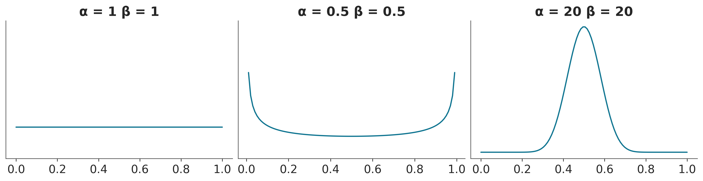
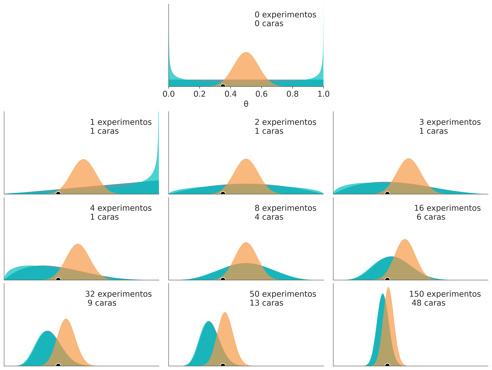
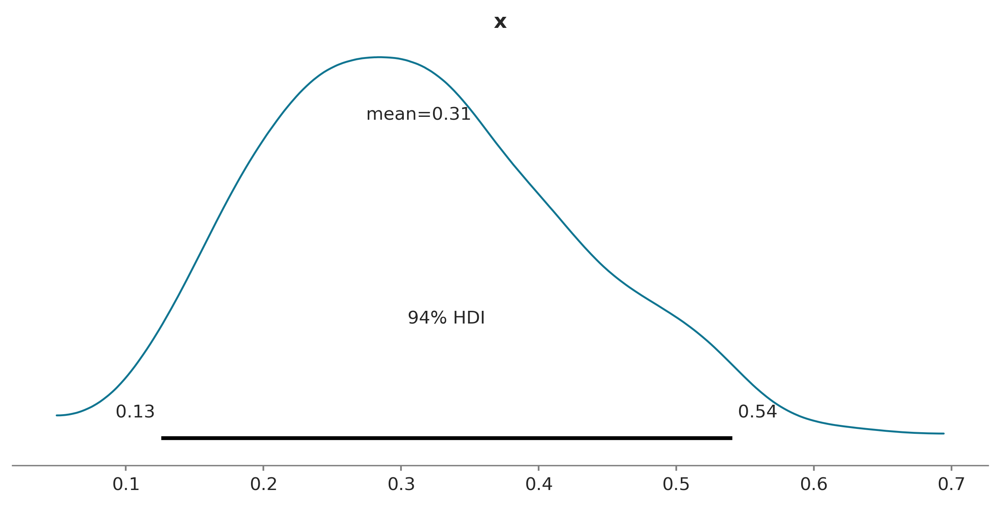
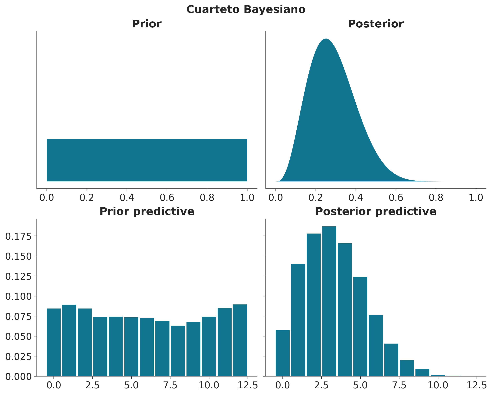

import arviz as az
from ipywidgets import interact
import ipywidgets as ipyw
import matplotlib.pyplot as plt
import numpy as np
import preliz as pzInferencia Bayesiana
az.style.use('arviz-doc')Objetivos de este capítulo
- Comprender el teorema de Bayes
- Comprender que implica hacer estadística Bayesiana
- Aprender cómo se interpretan las probabilidades en estadística Bayesiana
- Entender las distribuciones a priori, a posteriori, a priori predictiva y a posteriori predictiva
El universo Bayesiano
La teoría de la probabilidad es tan solo sentido común reducido a cálculo. -Pierre-Simon Laplace
En este curso aprenderemos sobre una forma de hacer estadística llamada usualmente estadística Bayesiana. El nombre se debe a Thomas Bayes (1702-1761) un ministro presbiteriano, y matemático aficionado, quien derivó por primera vez lo que ahora conocemos como el teorema de Bayes, el cual fue publicado (postumanente) en 1763. Sin embargo una de las primeras personas en realmente desarrollar métodos Bayesianos, fue Pierre-Simon Laplace (1749-1827), por lo que tal vez sería un poco más correcto hablar de Estadística Laplaciana y no Bayesiana.
Existe otro paradigma estadístico llamado estadística clásica o frecuentista. Si ustedes han tenido un curso de estadística (ya sea en el grado o posgrado) es casi seguro que dicho curso fue sobre métodos frecuentistas (aun cuando esto no haya sido explicitado). Es interesante notar que mientras los orígenes de las estadística Bayesiana se remontan al siglo XVIII. Los métodos “clásicos” (o frecuentistas) fueron desarrollados principalmente durante el siglo XX! De hecho una de las motivaciones para desarrollar métodos frecuentistas fue un sentimiento e ideología anti-bayesiano. A lo largo del curso nos centraremos en los métodos Bayesianos.
Hay dos ideas centrales que hacen que un método sea Bayesiano:
- Toda cantidad desconocida es modelada utilizando una distribución de probabilidad de algún tipo.
- El teorema de Bayes es usado para actualizar dicha distribución a la luz de los datos.
En el universo Bayesiano las cantidades conocidas son consideradas fijas y usualmente les llamamos datos. Por el contrario toda cantidad desconocida es considerada como una variable aleatoria y modelada usando una distribución de probabilidad.
Teorema de Bayes
El teorema de Bayes es una consecuencia directa de la regla del producto, veamos.
\[ p(\theta, Y) = p(\theta \mid Y)\; p(Y) \\ p(\theta, Y) = p(Y \mid \theta)\; p(\theta) \] Dado que los dos términos a la derecha de la igualdad son iguales entre si podemos escribir que:
\[ p(\theta \mid Y) \; p(Y) = p(Y \mid \theta)\; p(\theta) \]
Reordenando llegamos al Teorema de Bayes!
\[ p(\theta \mid Y) = \frac{p(Y \mid \theta) p(\theta)}{p(Y)} \]
El cual también suele ser escrito de la siguiente forma:
\[ \overbrace{p(\theta \mid Y)}^{\text{posterior}} = \frac{\overbrace{p(Y \mid \theta)}^{\text{likelihood}} \overbrace{p(\theta)}^{\text{prior}}}{\underbrace{\int_{\Theta} p(Y \mid \theta) p(\theta) \text{d}\theta}_{\text{likelihood marginal}}} \]
El a priori es la forma de introducir conocimiento previo sobre los valores que pueden tomar los parámetros. A veces cuando no sabemos demasiado se suelen usar a prioris que asignan igual probabilidad a todos los valores de los parámetros, otras veces se puede elegir a prioris que restrijan los valores de los parámetros a rangos razonables, algo que se conoce como regularización, por ejemplo solo valores positivos. Muchas veces contamos con información mucho más precisa como medidas experimentales previas o límites impuesto por alguna teoría.
El likelihood es la forma de incluir nuestros datos en el análisis. Es una expresión matemática que especifica la plausibilidad de los datos. El likelihood es central tanto en estadística Bayesiana como en estadística no-Bayesiana. A medida que la cantidad de datos aumenta el likelihood tiene cada vez más peso en los resultados, esto explica el porqué a veces los resultados de la estadística Bayesiana y frecuentista coinciden cuando la muestra es grande.
El a posteriori es la distribución de probabilidad para los parámetros. Es la consecuencia lógica de haber usado un conjunto de datos, un likelihood y un a priori. Se lo suele pensar como la versión actualizada del a priori. De hecho un a posteriori puede ser un a priori de un análisis a futuro.
La likelihood marginal (también llamado evidencia) es el likelihood promediado sobre todas los posibles hipótesis (o conjunto de parámetros) \(\theta\), esto es equivalente a \(p(Y)\). En general, la evidencia puede ser vista como una simple constante de normalización que en la mayoría de los problemas prácticos puede (y suele) omitirse. Por lo que el teorema de Bayes suele aparecer escrito como:
\[ p(\theta \mid Y) \propto p(Y \mid \theta) p(\theta) \]
El rol de todos estos términos irá quedando más claro a medida que avancemos.
El a posteriori como único estimador
El a posteriori representa todo lo que sabemos de un problema, dado un modelo y un conjunto de datos. Y por lo tanto cualquier cantidad que nos interese sobre el problema puede deducirse a partir de él. Tipicamente esto toma la forma de integrales como la siguiente.
\[ J = \int \varphi(\theta) \ \ p(\theta \mid Y) d\theta \]
Por ejemplo, para calcular la media de \(\theta\) deberíamos reemplazar \(\varphi(\theta)\), por \(\theta\):
\[ \bar \theta = \int \theta \ \ p(\theta \mid Y) d\theta \]
Esto no es más que la definición de un promedio pesado, donde cada valor de \(\theta\) es pesado según la probabilidad asignada por el a posteriori.
En la práctica, y al usar métodos computacionales como los usados en este curso, estas integrales pueden aproximarse usando sumas.
Estadística Bayesiana en tres pasos
El teorema de Bayes es el único estimador usado en estadística Bayesiana. Por lo que conceptualmente la estadística Bayesiana resulta muy simple. Según George Box y Andrew Gelman et al. (2013) la estadística Bayesiana se reduce a tres pasos:
Crear un modelo probabilístico. Los modelos probabilísticos son historias que dan cuenta de como se generan los datos observados (o por observar). Los modelos se expresan usando distribuciones de probabilidad.
Condicionar el modelo a los datos observados a fin de obtener el a posteriori. Usando el teorema de Bayes se actualizan las probabilidades asignadas a priori de acuerdo a los datos observados obteniéndose las probabilidades a posteriori.
Criticar el ajuste del modelo generado a los datos y evaluar las consecuencias del modelo. Se puede demostrar que dada la información previa y los datos observados no existe otro mecanismo capaz de generar una mejor inferencia que la estadística Bayesiana. Esto parece maravilloso, pero hay un problema, solo es cierto si se asumen que los datos y el modelo son correctos. En la práctica, los datos pueden contener errores y los modelos son a duras penas aproximaciones de fenómenos reales. Por lo tanto es necesario realizar varias evaluaciones, incluyendo si las predicciones generadas por el modelo se ajustan a los datos observados, si las conclusiones obtenidas tienen sentido dado el marco conceptual en el que uno trabaja, la sensibilidad de los resultados a los detalles del modelo (sobre todo a detalles para los cuales no tenemos demasiada información), etc.
Inferencia Bayesiana
En la práctica la mayoría de los modelos tendrán más de un parámetro, pero al usar software como PyMC modelar 1 o 1000 parámetros es más o menos lo mismo. Sin embargo, esos modelos pueden distraernos de los conceptos esenciales, por lo que considero importante comenzar por el caso más sencillo.
El problema de la moneda
A juzgar por la cantidad de ejemplos sobre monedas arrojadas al aires en libros de estadística y probabilidad, pareciera que las monedas son uno de los objetos de estudio centrales de estas disciplinas.
Una de las razones detrás de la ubiquidad de este ejemplo es que las monedas son objetos familiares que facilitan discutir conceptos que de otra forma podrían sonar demasiado abstractos. De todas formas quizá la razón más importante sea que el problema puede ser modelado de forma simple y que muchos problemas reales son conceptualmente similares, de hecho cualquier problema en donde obtengamos resultados binarios (0/1, enfermo/sano, spam/no-spam, etc) puede ser pensado como si estuviéramos hablando de monedas. En definitiva el modelo que veremos a continuación (ejemplificado con monedas) sirve para cualquier situación en la cual los datos observados solo pueden tomar dos valores mutuamente excluyentes. Debido a que estos valores son nominales y son dos, a este modelo se le llama binomial.
En el siguiente ejemplo trataremos de determinar el grado en que una moneda está sesgada. En general cuando se habla de sesgo se hace referencia a la desviación de algún valor (por ejemplo, igual proporción de caras y cecas), pero aquí usaremos el termino sesgo de forma más general. Diremos que el sesgo es un valor en el intervalo [0, 1], siendo 0 para una moneda que siempre cae ceca y 1 para una moneda que siempre cae cara y lo representaremos con la variable \(\theta\). A fin de cuantificar \(\theta\) arrojaremos una moneda al aire repetidas veces, por practicidad arrojaremos la moneda de forma computacional (¡pero nada nos impide hacerlo manualmente!). Llevaremos registro del resultado en la variable \(y\). Siendo \(y\) la cantidad de caras obtenidas en un experimento.
Habiendo definido nuestro problema debemos expresarlo en términos del teorema de Bayes,
\[ p(\theta \mid Y) \propto p(Y \mid \theta) p(\theta) \]
Donde, como dijimos \(\theta = 1\) quiere decir 100% cara y \(\theta = 0\) 100% ceca.
Ahora solo restar reemplazar los dos términos a la derecha de la igualdad, el a priori y el likelihood, por distribuciones de probabilidad adecuadas y luego multiplicarlas para obtener el término a la izquierda, el a posteriori. Como es la primera vez que haremos ésto, lo haremos paso a paso y analíticamente. En el próximo capítulo veremos cómo hacerlo computacionalmente.
Definiendo el a priori
El a priori lo modelaremos usando una distribución beta, que es una distribución muy usada en estadística Bayesiana. La \(pdf\) de esta distribución es:
\[ p(\theta)= \frac{\Gamma(\alpha+\beta)}{\Gamma(\alpha)\Gamma(\beta)}\, \theta^{\alpha-1}(1-\theta)^{\beta-1} \]
El primer término es una constante de normalización. Por suerte para nuestro problema nos basta con establecer una proporcionalidad, por lo que podemos simplificar esta expresión y escribir la distribución beta de la siguiente forma.
\[ p(\theta) \propto \theta^{\alpha-1}(1-\theta)^{\beta-1} \]
Hay varias razones para usar una distribución beta para este y otros problemas:
- La distribución beta varía entre 0 y 1, de igual forma que lo hace \(\theta\) en nuestro modelo.
- Esta distribución combinada con la que elegiremos como likelihood (ver más adelante), nos permitirá resolver el problema de forma analítica.
- Es una distribución versátil para expresar distintas situaciones.
Respecto al último punto, veamos un ejemplo. Supongamos que el experimento de la moneda es realizado por tres personas. Una de ellas dice no saber nada de la moneda por lo tanto a priori todos los valores de \(\theta\) son igualmente probables. La segunda persona desconfía de la moneda, ya que sospecha que es una moneda trucada, por lo tanto considera que está sesgada, pero no sabe para cual de las dos opciones. Por último, la tercer persona asegura que lo más probable es que \(\theta\) tome un valor alrededor de 0.5 ya que así lo indican experimentos previos y análisis teóricos sobre tiradas de monedas. Todas estas situaciones pueden ser modeladas por la distribución beta, como se ve a continuación.
_, axes = plt.subplots(1, 3, figsize=(12, 3), sharey=True)
x = np.linspace(0, 1, 100)
params = [(1, 1), (0.5, 0.5), (20, 20)]
for (a, b), ax in zip(params, axes):
y = pz.Beta(a, b).rv_frozen.pdf(x)
ax.plot(x, y)
ax.set_yticks([])
ax.set_title(f'α = {a} β = {b}')
def beta(α, β):
x = np.linspace(0, 1, 130)
plt.plot(x, pz.Beta(α, β).rv_frozen.pdf(x))
plt.yticks([])
plt.ylim(0, 6)
interact(beta,
α=ipyw.FloatSlider(min=0.5, max=7, step=0.5, value=2),
β=ipyw.FloatSlider(min=0.5, max=7, step=0.5, value=2));Definiendo el likelihood
Habiendo definido el a priori veamos ahora el likelihood. Asumiendo que el resultado obtenido al arrojar una moneda no influye en el resultado de posteriores experimentos (es decir los experimentos son independientes entre sí) es razonable utilizar como likelihood la distribución binomial.
\[ p(y \mid \theta) = \frac{N!}{y!(N-y)!} \theta^y (1 - \theta)^{N−y} \]
Donde N es la cantidad total de experimentos (monedas arrojadas al aire) e \(y\) es la cantidad de caras obtenidas. A los fines prácticos podríamos simplificar la igualdad anterior y convertirla en una proporcionalidad, eliminando el término \(\frac{N!}{y!(N-y)!}\) ya que ese término no depende de \(\theta\) que es lo que nos interesa averiguar. Por lo que podríamos establecer que:
\[ p(y \mid \theta) \propto \theta^y (1 - \theta)^{N−y} \]
La elección de esta distribución para modelar nuestro problema es razonable ya que \(\theta\) es la chance de obtener una cara al arrojar una moneda y ese hecho ha ocurrido \(y\) veces, de la misma forma \(1-\theta\) es la chance de obtener ceca lo cual ha sido observado \(N-y\) veces.
def binomial(n, θ):
plt.bar(range(n+1), pz.Binomial(n, θ).rv_frozen.pmf(range(n+1)))
plt.xticks(range(n+1))
plt.ylim(0, 1);
interact(binomial, n=ipyw.IntSlider(min=1, max=10, value=1), θ=ipyw.FloatSlider(min=0, max=1, step=0.05, value=0.5));Obteniendo el a posteriori
Se puede demostrar que siempre que usemos como prior una función beta y como likelihood una distribución binomial obtendremos como resultado una distribución a posteriori, la cual será una beta con los siguientes parámetros:
\[ p(\theta \mid y) \propto \operatorname{Beta}(\alpha_{a priori} + y, \beta_{a priori} + N - y) \]
Veamos de donde surge este resultado, según el teorema de Bayes la distribución a posteriori es el producto del likelihood y la distribución a priori.
\[ p(\theta \mid y) \propto p(y \mid \theta) p(\theta) \]
Por lo tanto, en nuestro caso tendremos que:
\[ p(\theta \mid y) \propto \theta^y (1 - \theta)^{N−y} \theta^{\alpha-1}(1-\theta)^{\beta-1} \]
Reordenando, obtenemos que el a posteriori es:
\[ p(\theta \mid y) \propto \theta^{\alpha-1+y}(1-\theta)^{\beta-1+N−y} \]
Esto es una distribución Beta (sin considerar la constante de normalización).
Cuando se cumple que para un cierto likelihood la forma funcional del a priori y la del a posteriori coinciden se dice que el a priori es conjugado con el likelihood. Historicamente los problemas en estadística Bayesiana estuvieron restringidos al uso de a prioris conjugados, ya que estos garantizan la tratabilidad matemática del problema, es decir garantizan que es posible obtener una expresión analítica para nuestro problema. En el próximo capítulo veremos técnicas computacionales modernas que permiten calcular la distribución a posteriori incluso cuando no se usan a prioris conjugados. Estas técnicas computacionales han permitido el resurgimiento de la estadística Bayesiana en las últimas décadas.
Notación y visualización de modelos Bayesianos
Para representar modelos en estadística Bayesiana (y en probabilidad en general) se suele utilizar la siguiente notación
\[ \begin{align} \theta \sim & \operatorname{Beta}(\alpha, \beta) \\ Y \sim & \operatorname{Bin}(n=1, p=\theta) \end{align} \]
El símbolo \(\sim\) indica que la variable a la izquierda se distribuye según la distribución a la derecha. Entonces podríamos decir que \(\mathbf{\theta}\) es una variable aleatoria con distribución \(\operatorname{Beta}\), y que \(\operatorname{Beta}\) está definida por los parámetros \(\alpha\) y \(\beta\), este es nuestro a priori. En la siguiente linea tenemos el likelihood el cual está definido por una distribución binomial con parámetros \(n=1\) y \(p=\theta\).
Gráficamente esto se puede representar usando los diagramas de Kruschke:

En el primer nivel (de arriba hacia abajo) se observa el a priori, luego el likelihood, y por último los datos. Las flechas indican la vinculación entre las partes del modelo y el signo \(\sim\) la naturaleza estocástica de las variables.
Obteniendo los datos
Bien, ahora que sabemos cómo calcular el a posteriori, lo único que resta es conseguir los datos. En este ejemplo los datos son sintéticos, es decir los obtuve computacionalmente mediante un generador de números (pseudo)aleatorios, pero bien podrían haber surgido de un experimento con una moneda real.
Calculando el a posteriori
En el próximo capítulo veremos cómo usar métodos computacionales para computar un a posteriori sin necesidad de derivarlo analíticamente. Esto es lo que haremos para resolver el resto de los problemas del curso. Pero dado que ya nos tomamos el trabajo de derivar analíticamente la expresión para el a posteriori vamos a usar esa expresión. Si miran el código de la siguiente celda verán que la mayoría de las lineas se encargan de dibujar los resultados y no de calcularlos. El cálculo del a posteriori ocurre en la línea 20. Cada una de estas lineas computa el a posteriori para cada uno de los a prioris que vimos antes. El cálculo es simple, tan solo se computa el valor del a posteriori (usando la función pdf de la distribución beta provista por SciPy) para 2000 puntos igualmente espaciados entre 0 y 1 (linea 9). El loop que empieza en la linea 11 se debe a que exploraremos cómo cambian las distribuciones a posteriori para distinta cantidad de datos (n_intentos). Con un círculo negro de contorno blanco se indica el valor real de \(\theta\), valor que por supuesto es desconocido en una situación real, pero conocido para mí, ya que los datos son sintéticos.
plt.figure(figsize=(12, 9))
n_trials = [0, 1, 2, 3, 4, 8, 16, 32, 50, 150]
data = [0, 1, 1, 1, 1, 4, 6, 9, 13, 48]
theta_real = 0.35
beta_params = [(1, 1), (0.5, 0.5), (20, 20)]
dist = pz.Beta
x = np.linspace(0, 1, 2000)
for idx, N in enumerate(n_trials):
if idx == 0:
plt.subplot(4, 3, 2)
plt.xlabel('θ')
else:
plt.subplot(4, 3, idx+3)
plt.xticks([])
y = data[idx]
for (a_prior, b_prior) in beta_params:
posterior = dist(a_prior + y, b_prior + N - y).rv_frozen.pdf(x)
plt.fill_between(x, 0, posterior, alpha=0.7)
plt.plot(theta_real, 0, ms=9, marker='o', mec='w', mfc='k')
plt.plot(0, 0, label=f'{N:4d} experimentos\n{y:4d} caras', alpha=0)
plt.xlim(0, 1)
plt.ylim(0, 12)
plt.legend()
plt.yticks([])
Analizando los resultados
La primer figura del panel muestra los a priori, nuestra estimación de \(\theta\) dado que no hemos realizado ningún experimento. Las sucesivas nueve figuras muestran las distribuciones a posteriori y se indica la cantidad de experimentos y de caras obtenidas. Además se puede ver un círculo negro de contorno blanco en 0.35, la cual representa el valor verdadero de \(\theta\). Por supuesto que en problemas reales este valor es desconocido.
Este ejemplo es realmente ilustrativo en varios aspectos.
- El resultado de un análisis Bayesiano NO es un solo valor, si no una distribución (a posteriori) de los valores plausibles de los parámetros (dado los datos y el modelo).
- La dispersión o ancho de las curvas es una medida de la incertidumbre sobre los valores.
- El valor más probable viene dado por la moda de la distribución (el pico de la distribución).
- Aún cuando \(\frac{2}{1} = \frac{8}{4}\) son numéricamente iguales tenemos menor incertidumbre en un resultado cuando el número de experimentos es mayor.
- Dada una cantidad suficiente de datos los resultados tienden a converger sin importar el a priori usado.
- La rapidez con la que los resultados convergen varía. En este ejemplo las curvas azul y turquesa parecen converger con tan solo 8 experimentos, pero se necesitan más de 50 experimentos para que las tres curvas se muestren similares. Aún con 150 experimentos se observan ligeras diferencias.
- Partiendo de los a priori uniforme (azul) o sesgado (turquesa) y habiendo realizado un solo experimento y observado una sola cara, lo más razonable es pensar que estamos frente a una moneda con dos caras!
- La situación cambia drásticamente al ver por primera vez una moneda caer ceca. Ahora lo más probable (dado cualquiera de los tres a prioris) es inferir que \(\theta=0.5\). Los valores de \(\theta\) exactamente 0 o 1 se vuelven imposibles.
- El a priori naranja es más informativo que los otros dos (la distribución esta más concentrada), por ello se requiere de un número mas grande de experimentos para “moverlo”.
- El a priori uniforme (azul) es lo que se conoce como no informativo. El resultado de un análisis Bayesiano usando un a priori no-informativos en general coinciden con los resultados de análisis frecuentistas (en este caso el valor esperado de \(\theta = \frac{y}{N}\)).
Influencia y elección del a priori
De los ejemplos anteriores debería quedar claro que los a priori influencian los resultados de nuestros cálculos. Esto tiene total sentido si no fuese así no haría falta incluirlos en el análisis y todo sería más simple (aunque nos perderíamos la oportunidad de usar información previa). De los ejemplos anteriores también debería quedar claro que a medida que aumentan los datos (como las tiradas de monedas) los resultados son cada vez menos sensibles al a priori. De hecho, para una cantidad infinita de datos el a priori no tiene ningún efecto. Exactamente cuantos datos son necesarios para que el efecto del a priori sea despreciable varía según el problema y los modelos usados. En el ejemplo de la moneda se puede ver que 50 experimentos bastan para hacer que dos de los resultados sean prácticamente indistinguibles, pero hacen falta más de 150 experimentos para que los 3 resultados se vuelvan practicamente independientes del a priori. Esto es así por que los dos primeros a prioris son relativamente planos, mientras que el tercer a priori concentra casi toda la probabilidad en una región relativamente pequeña. El tercer a priori no solo considera que el valor más probable de \(\theta\) es 0.5, si no que considera que la mayoría de los otros valores son muy poco probables. ¿Cómo cambiarían los resultados si hubiéramos usado como a priori \(\operatorname{Beta}(\alpha=2, \beta=2)\)?
La elección de los a priori puede poner nervioso a quienes se inician en el análisis Bayesiano (o a los detractores de este paradigma). ¡El temor es que los a prioris censuren a los datos y no les permitan hablar por sí mismos! Eso está muy bien, pero el punto es que los datos no saben hablar, con suerte murmuran. Los datos solo tienen sentido a la luz de los modelos (matemáticos y mentales) usados para interpretarlos, y los a prioris son parte de esos modelos.
Hay quienes prefieren usar a priori no-informativos (también conocidos como a priori planos, vagos, o difusos). Estos a priori aportan la menor cantidad posible de información y por lo tanto tienen el menor impacto posible en el análisis. Si bien es posible usarlos, en general hay razones prácticas para no preferirlos. En este curso usaremos a priori ligeramente informativos siguendo las recomendaciones de Gelman, McElreath, Kruschke, y otros. En muchos problemas sabemos al menos algo de los valores posibles que pueden tomar nuestros parámetros, por ejemplo que solo pueden ser positivos, o que están restringidos a sumar 1 o el rango aproximado, etc. En esos casos podemos usar a prioris que introduzcan esta ligera información. En estos casos podemos pensar que la función del a priori es la de mantener las inferencias dentro de límites razonables. Estos a priori se suelen llamar regularizadores.
Por supuesto que también es posible usar a prioris informativos (o fuertes). Hacer esto es razonable solo si contamos con información previa confiable. Esto puede ser ventajoso en casos en que los datos contengan poca información sobre el problema. Si la información no viene por el likelihood (datos), entonces puede venir por el a priori. A modo de ejemplo, en bioinformática estructural es común usar toda la información previa posible (de forma Bayesiana y no-Bayesiana) para resolver problemas. Esto es posible por la existencia de bases de datos que almacenan los resultados de cientos o miles experimentos realizados a lo largo de décadas de esfuerzo (¡No usar esta información sería casi absurdo!). En resumen, si contás con información confiable no hay razón para descartarla, menos si el argumento es algo relacionado con pretender ser objetivo (¡No hay objetividad en negar lo que se sabe!).
Hasta ahora hemos visto que es posible clasificar, aunque sea de forma vaga o aproximada, a los a priori en función de la información que contienen. Pero saber esta clasificación no necesariamente hace las cosas más simples a la hora de elegir un a priori. ¿Acaso no sería mejor eliminar los a prioris de nuestro análisis? Eso haría el asunto mucho mas simple. Bueno, el punto es que desde una perspectiva Bayesiana todos los modelos tienen a prioris, aun cuando no sean explícitos. De hecho muchos resultados de la estadística frecuentista pueden considerarse casos especiales de modelos Bayesianos usando a prioris planos. Volviendo a la figura anterior se puede ver que la moda del a posteriori para la curva azul. Coincide con la estimación (puntual) frecuentista para el valor de \(\theta\)
\[ \hat \theta = {{y} \over {N}} \]
Notar que \(\hat \theta\) es una estimación puntual (un número) y no una distribución.
Este ejemplo nos muestra que no es posible hacer análisis estadísticos y sacarse los a prioris de encima. Un posible corolario es que es más flexible y transparente especificar los a prioris de forma explícita que esconderlos bajo la cama. Al hacerlo ganamos mayor control sobre nuestro modelo, mayor transparencia y por el mismo precio la estimación de la incertidumbre con la que se estima cada parámetro.
Por último, hay que recordar que el modelado estadístico (como otras formas de modelado) es un proceso iterativo e interactivo. Nada nos impide usar más de un a priori (o un likelihood) si así lo quisiéramos. Una parte importante del modelado es la de cuestionar los supuestos y los a prioris son simplemente un tipo de supuestos (como lo son los likelihoods). Si tuvieramos más de un a priori razonable podríamos realizar un análisis de sensibilidad, es decir evaluar como cambian los resultados con los a prioris, podríamos llegar a la conclusión que para un rango amplio de a prioris ¡los resultados no varían! Más adelante veremos varias herramientas para comparar distintos modelos.
Dado que los a prioris tienen un papel central en la estadística Bayesiana, seguiremos discutiéndolos a medida que vayamos viendo problemas concretos. Por lo que si esta discusión no ha aclarado todas tus dudas y seguís algo confundido, mejor mantener la calma y no preocuparse demasiado, este tema ha sido motivo de discusión y confusión durante décadas ¡y la discusión todavía continua!
Cuantificando el peso del a priori
En general la distribución más familiar para la mayoría de las personas es la distribución Gaussiana, como esta distribución está definida por dos parámetros, la media y la dispersión de ese valor medio, suele resultarnos natural pensar las distribuciones en esos términos. Si queremos expresar la distribución beta en función de la media y la dispersión podemos hacerlo de la siguiente forma:
\[\begin{align} \alpha &= \mu \kappa \\ \beta &= (1 - \mu) \kappa \end{align}\]
donde \(\mu\) es la media y \(\kappa\) es un parámetro llamado concentración. Por ejemplo si \(\mu=0.5\) y \(\kappa=40\), tenemos que:
\[\begin{align} \alpha = 0.5 \times 40 &= 20 \\ \beta = (1-0.5) \times 40 &= 20 \end{align}\]
\(\kappa\) se puede interpretar como la cantidad de experimentos si/no que realizamos dándonos como resultado la media \(\mu\). Es decir el a priori no sesgado (naranja) equivale a haber arrojado una moneda 40 veces y haber obtenido como media 0.5. Es decir que si usamos ese a priori recién al observar 40 experimentos si/no, los datos tendrán el mismo peso relativo que el a priori, por debajo de este número el a priori contribuye más que los datos al resultado final y por encima menos. El a priori azul (uniforme) equivale a haber observado a la moneda caer una vez cara y otra vez ceca (\(\kappa = 2\)). Cuando \(\kappa < 2\), la cosa se pone un poco extraña, por ejemplo el a priori sesgado (turquesa) equivale a haber observado una sola moneda (\(\kappa = 1\)) pero en una especie de (a falta de mejor analogía) ¡superposición cuántica de estados!
Resumiendo el a posteriori
El resultado de un análisis Bayesiano es siempre una distribución de probabilidad.
A la hora de comunicar los resultados de un análisis Bayesiano, lo más informativo es reportar la distribución completa, aunque esto no siempre es posible o deseable, por ejemplo el a posteriori de una distribución multidimensional es imposible de dibujar en papel. En general, se suele recurrir a distintas medidas que resumen el a priori, por ejemplo reportando la media de la distribución a posteriori. Algo un poco más informativo es reportar además un intervalo de credibilidad. Existen varios criterios para definir intervalos de credibilidad, el que usaremos en este curso (y que también es ampliamente usado en la literatura) es lo que se conoce como intervalo de más alta densidad y nos referiremos a él por su sigla en ingles, HDI (Highest Posterior Density interval). Un HDI es el intervalo, más corto, que contiene una porción fija de la densidad de probabilidad, generalmente el 95% (aunque otros valores como 90% o 50% son comunes). Cualquier punto dentro de este intervalo tiene mayor densidad que cualquier punto fuera del intervalo. Para una distribución unimodal, el HDI 95 es simplemente el intervalo entre los percentiles 2,5 y 97,5.
ArviZ es un paquete de Python para análisis exploratorio de modelos Bayesianos. ArviZ provee de funciones que facilitan el resumir el a posteriori. Por ejemplo plot_posterior puede ser usado para generar un gráfico con la media y HDI. En el siguiente ejemplo en vez de un a posteriori de un ejemplo real estamos usando datos generados al azar según una distribución beta.
mock_posterior = pz.Beta(5, 11).rvs(size=1000)
az.plot_posterior(mock_posterior, figsize=(8, 4));
Ahora que estamos aprendiendo que es un HDI por primera vez y antes de que automaticemos el concepto conviene aclarar un par de puntos.
La elección automática de 95% (o cualquier otro valor) es totalmente arbitraria. En principio no hay ninguna razón para pensar que describir el a posteriori con un HDI 95 sea mejor que describirlo con un HDI 98 o que no podamos usar valores como 87% o 66%. El valor de 95% es tan solo un accidente histórico. Como un sutil recordatorio de esto ArviZ usa por defecto el intervalo de 94%.
Un intervalo de credibilidad (que es Bayesiano) no es lo mismo que un intervalo de confianza (que es frecuentista). Un intervalo de confianza es un intervalo que se define según un nivel de confianza, en general del 95%. Un intervalo de confianza se construye de tal forma que si repitiéramos infinitas veces un experimento obtendríamos que la proporción de intervalos que contienen el valor verdadero del parámetro que nos interesa coincide con el nivel de confianza estipulado. Contra-intuitivamente esto no es lo mismo que decir que un intervalo en particular tiene una probabilidad \(x\) de contener el parámetro (esto sería la definición de un intervalo de credibilidad, que es Bayesiano). De hecho, un intervalo de confianza en particular contiene o no contiene al valor, la teoría frecuentista no nos deja hablar de probabilidades de los parámetros, ya que estos tienen valores fijos. Si no queda clara la diferencia no te hagas problema, la diferencia entre estos dos conceptos suele ser tan difícil de entender que en la práctica estudiantes y científicos por igual interpretan los intervalos de confianza (frecuentistas) como intervalos de credibilidad (Bayesianos).
Si bien desde la perspectiva Bayesiana podemos afirmar que un intervalo de credibilidad nos permite asegurar que la probabilidad de un parámetro está acotado en cierto rango. Siempre hay que tener presente que dicha afirmación es correcta SOLO en sentido teórico. Es decir, solo si todos los supuestos contenidos en el modelo son ciertos. Una inferencia es siempre dependiente de los datos y modelos usados.
Distribución predictivas a posteriori
Si bien el objeto central de la estadística Bayesiana es la distribución a posteriori. Existen otras distribuciones muy importantes. Una de ellas es la distribución predictiva a posteriori.
Esta distribución representa las predicciones \(\tilde{y}\) de un modelo una vez obtenido el a posteriori. Se calcula de la siguiente manera:
\[ p(\tilde{y} \mid y) = \int p(\tilde{y} \mid \theta) p(\theta \mid y) d\theta \]
Es decir integramos \(\theta\) de acuerdo a la distribución a posteriori.
Computacionalmente podemos generar muestras de esta distribución según el siguiente procedimiento:
- Elegimos un valor de \(\theta\) de acuerdo a la distribución a posteriori \(p(\theta \mid y)\)
- Fijamos \(\theta\) en la distribución que usamos como likelihood \(p(\tilde{y} \mid \theta)\) y generamos una muestra aleatoria
- Repetimos desde 1, tantas veces como muestras necesitemos
Los datos generados son predictivos ya que son los datos que se esperaría ver por ejemplo en un futuro experimento, es decir son variables no observadas pero potencialmente observables. Como veremos en el siguiente capítulo un uso muy común para la distribución predictiva a posteriori es compararla con los datos observados y así evaluar si el posterior calculado es razonable.
Distribución predictiva a priori
Asi como es posible generar datos sintéticos desde el a posteriori. Es posible hacerlo desde el prior. En este caso la distribución se llama distribución predictiva a priori. Y representa los datos \(p(Y^\ast)\) que el modelo espera ver antes de haber visto los datos. O más formalmente antes de haber sido condicionado a los datos. Se calcula como:
\[ p(Y^\ast) = \int_{\Theta} p(Y^\ast \mid \theta) \; p(\theta) \; d\theta \]
Es importante notar que la definición es muy similar a la distribución predictiva a posteriori, solo que ahora integramos a lo largo del prior en vez del posterior.
Los datos generados son predictivos ya que son los datos que el modelo esperara ver, es decir son datos no observados pero potencialmente observables. Como veremos en el siguiente capítulo un uso muy común para la distribución predictiva a priori es compararla con nuestro conocimiento previo y así evaluar si el modelo es capaz de generar resultados razonable, incluso antes de haber incorporado los datos.
Distribución predictiva a priori y a posterior para el problema de la moneda.
En el caso del modelo beta-binomial es posible obtener analíticamente tanto la distribución predictiva a priori como a posteriori y estas son:
\[ p(Y^\ast) \propto \operatorname{Beta-binomial}(n=N, \alpha_{a priori}, \beta_{a priori}) \]
\[ p(\tilde{Y} \mid Y) \propto \operatorname{Beta-binomial}(n=N, \alpha_{a priori} + y, \beta_{a priori} + N - y) \]
Omitiremos la discusión de como se obtienen estas distribuciones
Cuarteto Bayesiano
El siguiente bloque de código computa las distribuciones a priori, a posteriori, predictica a priori y predictiva a posteriori. En vez de usar la distribución \(\operatorname{Beta-binomial}\) para las distribuciones predictivas hemos optado por usar una aproximación más computacional y muestrear primero de la distribuciones beta y luego de la binomial. Esperamos que esta decisión contribuya a comprender mejor que representan estas distribuciones.
Es importante notar que mientras la distribuciones a priori y a posteriori son distribución sobre los parámetros en un modelo, la distribución predictivas a priori y a posteriori son distribuciones sobre los datos (predichos).
fig, axes = plt.subplots(2, 2, figsize=(10, 8), sharex="row", sharey="row")
axes = np.ravel(axes)
dist = pz.Beta
a_prior = 1
b_prior = 1
N = 12
y = 3
x = np.linspace(0, 1, 100)
prior = dist(a_prior, b_prior).rv_frozen.pdf(x)
axes[0].fill_between(x, 0, prior)
axes[0].set_title("Prior")
axes[0].set_yticks([])
posterior = dist(a_prior + y, b_prior + N - y).rv_frozen.pdf(x)
axes[1].fill_between(x, 0, posterior)
axes[1].set_title("Posterior")
prior = dist(a_prior, b_prior).rvs(500)
prior_predictive = np.hstack([pz.Binomial(n=N, p=p).rvs(N) for p in prior])
axes[2].hist(prior_predictive, bins=range(0, N+2), rwidth=0.9, align="left", density=True)
axes[2].set_title("Prior predictive")
posterior = dist(a_prior + y, b_prior + N - y).rvs(500)
prior_predictive = np.hstack([pz.Binomial(n=N, p=p).rvs(N) for p in posterior])
axes[3].hist(prior_predictive, bins=range(0, N+2), rwidth=0.9, align="left", density=True)
axes[3].set_title("Posterior predictive");
fig.suptitle("Cuarteto Bayesiano", fontweight="bold", fontsize=16);
Resumen
Empezamos este capítulo con una breve discusión sobre el modelado estadístico y la teoría de la probabilidad y teorema de Bayes que se deriva de ella. Luego utilizamos el problema de la moneda como una excusa para introducir aspectos básicos del modelado Bayesiano y el análisis de datos. Utilizamos este ejemplo clásico para transmitir algunas de las ideas más importantes de las estadística Bayesiana, fundamentalmente el uso de distribuciones de probabilidad para construir modelos y representar la incertidumbre. Tratamos de desmitificar el uso de los a prioris dándoles el mismo estatus epistemológico-metodológico que otros elementos que forman parte del proceso de modelado e inferencia, como el likelihood o incluso meta-preguntas, ¿Por qué me interesa este problema en particular? Concluimos el capítulo con una breve y simple descripción de cómo interpretar y comunicar los resultados de un análisis bayesiano.
La siguiente figura, inspirada en una figura de Sumio Watanabe resume el flujo de trabajo Bayesiano tal cual se describió en este capítulo.

- Suponemos que existe una distribución verdadera que, en general, es desconocida (ya sea en la práctica o intrínsecamente). De esta distribucción se obtiene una muestra finita, ya sea haciendo un experimento, una encuesta, una observación, una simulación, etc.
- A partir de la muestra realizamos una inferencia Bayesiana obteniendo una distribución a posteriori. Esta distribución es el objeto central de la estadística Bayesiana ya que contiene toda la información sobre un problema (de acuero al modelo y los datos).
- Una cantidad que podemos derivar del a posteriori es la distribución predictiva a posteriori, es decir predicciones. Una forma de evaluar un modelo es comparar la distribución predictiva a posteriori con la muestra finita que obtuvimos en primer lugar.
La figura anterior es muy general y omite varios pasos, pero contiene la idea esencial que el modelado es un proceso iterativo. En los siguientes capítulo, veremos como sumar nuevos pasos, como que hacer cuando tenemos más de un modelo y profundizar sobre estos pasos y lo aprendido en este capítulo
Ejercicios
El estadístico Bruno de Finetti declaró que “Las probabilidades no existen”, queriendo indicar que las probabildiades son solo una herramienta para cuantificar la incerteza y que no tienen existencia objetiva en sí mismas. Edwin Jaynes, físico, declaró que la teoría de probabilidad es la lógica de la ciencia. Discuta estos enunciados a la luz de lo expuesto en este y el anterior capítulo.
Supongamos que tenemos dos monedas una que cae la mitad de veces cara y la mitad ceca y una moneda trucada que cae siempre cara. Si tomamos una de las monedas al azar y obtenemos cara, cual es la probabilidad que esa moneda sea la trucada.
Estás en un programa de concursos: Hay tres puertas, detrás de una de ellas un 0km, detrás de las otras dos, una cupón para tomar el té con Eduardo Feinmann. Sin saber cuál puerta esconde cada “premio” se te pide que elijas una de ella. Una vez elegida el conductor del programa (que si sabe que hay detrás de cada puerta), abre una de las puertas que contiene el cupón para pasar un rato con Eduardo Feinmann. En ese momento el conductor te advierte que tienes la posiblidad de cambiar de puerta o quedarte con la puerta que elegiste inicialmente. ¿Cuál es la mejor opción?
En la cola del supermercado una mujer les cuenta que es madre de dos niñes. Asumiendo que la probabilidad a priori de niña es la misma que la de niño y es igual a 1/2.
- Ustedes le preguntan si tiene algún varón y la mujer dice que sí ¿Cuál es la probabilidad que une de les niñes sea niña?
- Supongamos que en vez del escenario anterior, sucede otra cosa mientras están conversando aparece su hijo varón y la abraza. ¿Cuál es la probabilidad que la mujer tenga una hija?
En una escena del crimen se encuentra sangre. La sangre es de un tipo que solo está presente en el 1% de la población.
- El fiscal enuncia: “Si el acusado fuese inocente, la probabilidad que tuviese el mismo tipo de sangre encontrado en la escena del crimen sería de 1%, y de 99% si fuese culpable, por lo tanto ¡lo más probable es que sea culpable!”. Este razonamiento es incorrecto, explique el porqué.
- El abogado defensor enuncia: “El crimen ocurrió en una ciudad de 500000 habitantes por lo que 5000 personas tienen ese tipo de sangre, por lo tanto el acusado sólo tiene una probabiliad de 1/5000 de ser el responsable”. Este razonamiento también es incorrecto, explique el porqué.
Use la siguiente función para explorar diversas combinaciones de priors y likelihoods. Enuncie las conclusiones que considere más relevantes.
def a_posteriori_grilla(grilla=10, a=1, b=1, caras=6, tiradas=9):
grid = np.linspace(0, 1, grilla)
prior = pz.Beta(a, b).rv_frozen.pdf(grid)
likelihood = pz.Binomial(n=tiradas, p=grid).rv_frozen.pmf(caras)
posterior = likelihood * prior
posterior /= posterior.sum()
_, ax = plt.subplots(1, 3, sharex=True, figsize=(16, 4))
ax[0].set_title('caras = {}\ntiradas = {}'.format(caras, tiradas))
for i, (e, e_n) in enumerate(zip([prior, likelihood, posterior], ['a priori', 'likelihood', 'a posteriori'])):
ax[i].set_yticks([])
ax[i].plot(grid, e, 'o-', label=e_n)
ax[i].legend(fontsize=14)
interact(a_posteriori_grilla, grilla=ipyw.IntSlider(min=2, max=100, step=1, value=15), a=ipyw.FloatSlider(min=1, max=7, step=1, value=1), b=ipyw.FloatSlider(
min=1, max=7, step=1, value=1), caras=ipyw.IntSlider(min=0, max=20, step=1, value=6), tiradas=ipyw.IntSlider(min=0, max=20, step=1, value=9));